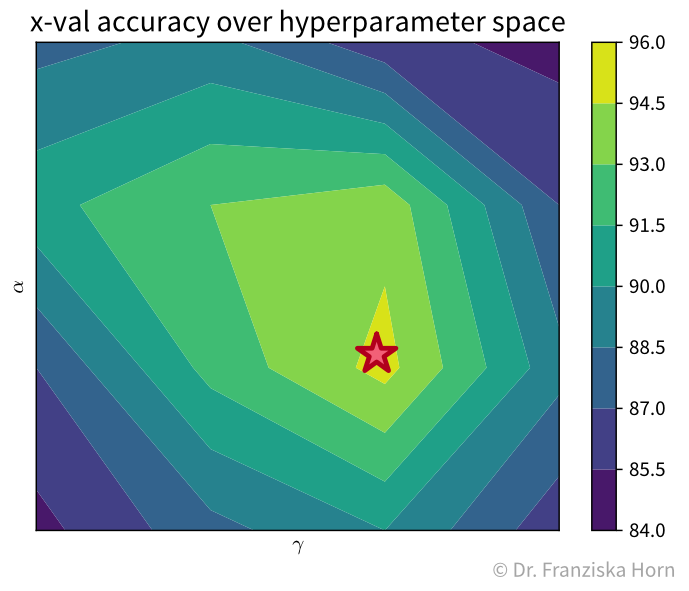

Model Evaluation
Since in supervised learning problems we know the ground truth, we can now objectively evaluate different models and benchmark them against each other.
Evaluation Metrics
We start with 3 evaluation metrics for regression problems: the mean absolute error, mean squared error, and \(R^2\).
- Mean absolute error (MAE)
-
 This is probably the most straightforward regression error metric and additionally easy to interpret since the error is given in the same units of measurement as the target variable (e.g., if you’re predicting a price in euros, you would know exactly by how many euros the model is off on average).
This is probably the most straightforward regression error metric and additionally easy to interpret since the error is given in the same units of measurement as the target variable (e.g., if you’re predicting a price in euros, you would know exactly by how many euros the model is off on average).
from sklearn.metrics import mean_absolute_error- Mean squared error (MSE)
-
 Since this regression error metric is differentiable, it is often used internally when optimizing the parameters of a model (e.g., in linear regression). When reporting the final error of a model, one often takes the square root of the result, i.e., instead reports the root mean squared error (RMSE), since this is again in the same units as the original target variable (but still less intuitive than the MAE).
Since this regression error metric is differentiable, it is often used internally when optimizing the parameters of a model (e.g., in linear regression). When reporting the final error of a model, one often takes the square root of the result, i.e., instead reports the root mean squared error (RMSE), since this is again in the same units as the original target variable (but still less intuitive than the MAE).
from sklearn.metrics import mean_squared_error- \(R^2\)
-
 The \(R^2\), or coefficient of determination, essentially compares the MSE of a regression model against the MSE of the ‘stupid baseline’ for the regression (i.e., predicting the mean), i.e., it normalizes the MSE by the variance of the data. In the best case, the \(R^2\) is 1, i.e., when the model explains the data perfectly, and in the worst case, it can even become negative, i.e., when the model performs worse then simply predicting the mean.
The \(R^2\), or coefficient of determination, essentially compares the MSE of a regression model against the MSE of the ‘stupid baseline’ for the regression (i.e., predicting the mean), i.e., it normalizes the MSE by the variance of the data. In the best case, the \(R^2\) is 1, i.e., when the model explains the data perfectly, and in the worst case, it can even become negative, i.e., when the model performs worse then simply predicting the mean.
from sklearn.metrics import r2_scoreNow lets look at evaluation metrics for classification problems.
- Classification errors in detail

- Accuracy
-
 The accuracy is the most widely used classification evaluation metric, where you simply check out of all samples, how many were classified correctly (i.e., TP and TN). However, this can be misleading for unequal class distributions and you should always compare the accuracy of your model against the ‘stupid baseline’ for classification, i.e., what the accuracy would be for a “model” that always predicts the most frequent class.
The accuracy is the most widely used classification evaluation metric, where you simply check out of all samples, how many were classified correctly (i.e., TP and TN). However, this can be misleading for unequal class distributions and you should always compare the accuracy of your model against the ‘stupid baseline’ for classification, i.e., what the accuracy would be for a “model” that always predicts the most frequent class.
from sklearn.metrics import accuracy_score- Unbalanced class distributions: Accuracy vs. Balanced Accuracy
-
Below you see the decision boundaries of two models on a toy dataset, where the background color indicates whether the model predicts the blue or red class for a data point in this area. Which model do you think is more useful?

With unbalanced class distributions, e.g., in this case a lot more samples from the blue compared to the red class, the accuracy of a model that simply always predicts the most frequent class can be quite large. But while an accuracy of 0.9 might sound impressive when you report the performance of a model to your project’s stakeholders, this doesn’t necessarily mean that the model is actually useful, especially since in real world problems the undersampled class is often the one we care about most, e.g., people with a rare disease or products that have a defect.
Instead, the balanced accuracy is often the more informative measure when evaluating classification models and can help us to distinguish between a model that has actually learned something and the ‘stupid baseline’:

- Balanced Accuracy
-
To avoid pitfalls of accuracy: consider misclassification rates of both classes separately:

from sklearn.metrics import balanced_accuracy_score- Multi-class problems: micro vs. macro averaging
-
The accuracy and balanced accuracy scores can also be generalized for the multi-class classification case. Here we instead use the terms micro- and macro-averaging to describe the two strategies (which can also be used for other kinds of metrics like the F1-score), where micro-averaging means we compute the score by averaging over all samples, while macro-averaging means we first compute the score for each class separately and then average over the values for the different classes.
micro-averaged score (→ accuracy_score):
\(n_{c}\) : number of samples belonging to class \(c\)
\(TP_{c}\) : number of correctly classified samples from class \(c\)
macro-averaged score (→ balanced_accuracy_score):
- Multi-class problems: Confusion matrix
-
Similarly, the table with the TP/FP/TN/FN entries can be extended for the multi-class classification case:
 The heatmap on the left show the (normalized) confusion matrix for a 10-class classification problem (recognizing handwritten digits), while the plot on the right shows example images for each case. Examining the confusion matrix and some individual examples can give you more faith in the predictions of your model, as you might realize that some misclassifications (highlighted in red) could also happen to a human, e.g., the 4 that was classified as a 1 or even the 4 that was classified as a 7 (which might even be a labeling error from when the dataset was originally created).
The heatmap on the left show the (normalized) confusion matrix for a 10-class classification problem (recognizing handwritten digits), while the plot on the right shows example images for each case. Examining the confusion matrix and some individual examples can give you more faith in the predictions of your model, as you might realize that some misclassifications (highlighted in red) could also happen to a human, e.g., the 4 that was classified as a 1 or even the 4 that was classified as a 7 (which might even be a labeling error from when the dataset was originally created).
from sklearn.metrics import confusion_matrixModel Selection
After you’ve chosen an appropriate evaluation metric for your problem, you can use the resulting scores to automatically select the best model hyperparameters and ultimately the best model.
- The case for an additional validation set
-
 As we’ve established in the beginning, before experimenting with any models, the dataset should always be split into a training and test set. However, this was actually not the complete picture: since you are typically experimenting with many different types of models and for each model type with dozens of hyperparameter settings, you should not use this test set to evaluate each of these model candidates, since it might happen that with all these things you try you end up choosing a model that performs really well on this test set, but then actually does not generalize to new data later and you would have no way of finding this out before deploying the model in production. Therefore, we introduce a new data split, the validation set, that is used to evaluate the different candidate models, while the test set remains locked away until you’re ready to evaluate your final model to get a realistic estimate of how it should actually perform on new data. If your original dataset is quite big, say, over 100k samples (depending on the diversity of your data, e.g., the number of classes), then it is usually enough to just split the data into training, validation, and test sets at the start, where the validation and test sets could contain about 10% of the data each and should be representative of the diversity of the original dataset. However, when the original dataset is smaller, it might not be possible to get such representative splits, which is when a technique called cross-validation (also abbreviated x-val) can come in very handy.
As we’ve established in the beginning, before experimenting with any models, the dataset should always be split into a training and test set. However, this was actually not the complete picture: since you are typically experimenting with many different types of models and for each model type with dozens of hyperparameter settings, you should not use this test set to evaluate each of these model candidates, since it might happen that with all these things you try you end up choosing a model that performs really well on this test set, but then actually does not generalize to new data later and you would have no way of finding this out before deploying the model in production. Therefore, we introduce a new data split, the validation set, that is used to evaluate the different candidate models, while the test set remains locked away until you’re ready to evaluate your final model to get a realistic estimate of how it should actually perform on new data. If your original dataset is quite big, say, over 100k samples (depending on the diversity of your data, e.g., the number of classes), then it is usually enough to just split the data into training, validation, and test sets at the start, where the validation and test sets could contain about 10% of the data each and should be representative of the diversity of the original dataset. However, when the original dataset is smaller, it might not be possible to get such representative splits, which is when a technique called cross-validation (also abbreviated x-val) can come in very handy.
- Cross-Validation
-
 In a k-fold cross-validation, the dataset is split into k parts, where each part is once the designated validation set, while the remaining k-1 parts are used for training. This way, the model is trained and evaluated k times, each time on different splits. By computing the mean and standard deviation of the error metrics on all folds, we get a reliable estimate of the model’s generalization error and its variation due to the diversity of the dataset. The extreme case of the k-fold cross-validation is the Leave-One-Out cross-validation, where the model is always evaluated on only a single sample.
In a k-fold cross-validation, the dataset is split into k parts, where each part is once the designated validation set, while the remaining k-1 parts are used for training. This way, the model is trained and evaluated k times, each time on different splits. By computing the mean and standard deviation of the error metrics on all folds, we get a reliable estimate of the model’s generalization error and its variation due to the diversity of the dataset. The extreme case of the k-fold cross-validation is the Leave-One-Out cross-validation, where the model is always evaluated on only a single sample.
- Hyperparameter Tuning
-
Often it is necessary to systematically evaluate a given model with different hyperparameter settings to find the best option. One straightforward approach for doing this is a grid search. In a grid search, you define the different values you want to test for each of the model’s hyperparameters and then all combinations of these different values for all hyperparameters are automatically evaluated, similar to how you would do it manually with nested for-loops. This is very useful, as often the different hyperparameter settings influence each other. Conveniently, sklearn furthermore combines this with a cross-validation. However, with many individual settings, this also comes at a computational cost, as the model is trained and evaluated \(k \times m_1 \times m_2 \times \dots \times m_i\) times, where \(k\) is the number of folds in the cross-validation and \(m_1...m_i\) are the number of values that need to be tested for each of the i hyperparameters of the model.
For example, with two hyperparameters, the grid search results could look something like the plot below, which shows a heatmap of the average accuracy achieved with each hyperparameter combination of a model in the cross-validation:
While sklearn’s grid search method will always directly tell you the best hyperparameter combination out of the ones it tested (here marked with a red star), it is important to actually check the complete set of results to verify that you have covered the whole range of possible hyperparameter values that could give good results (e.g., in the plot here we see a peak in the middle with the results getting worse to the sides, i.e., we know that better hyperparameter values are unlikely to lie outside of the range we’ve tested). It is generally a good idea to first start with a large range of values and then zoom in to the area that seems most promising (and of course knowledge about the different algorithms helps a lot in choosing reasonable settings as well).
Besides the basic grid search, there also exist other, more advanced hyperparameter tuning routines. For example, sklearn additionally implements a randomized search, and other dedicated libraries provide even fancier approaches, such as Bayesian optimization.
from sklearn.model_selection import GridSearchCV, RandomizedSearchCV